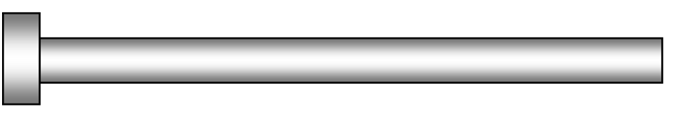
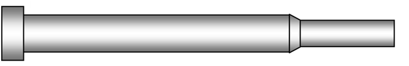
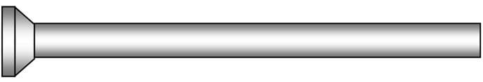
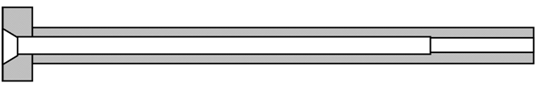
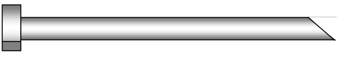
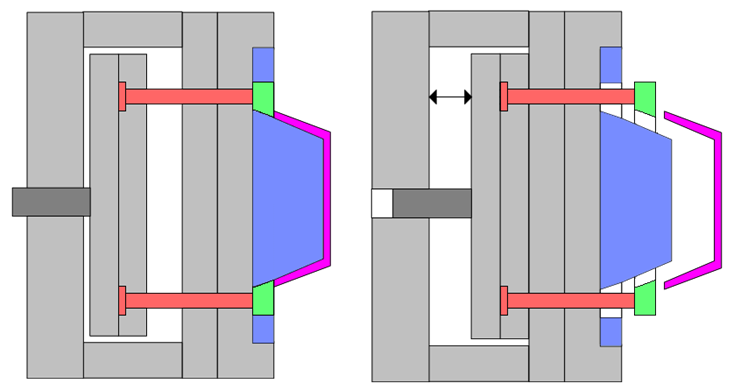
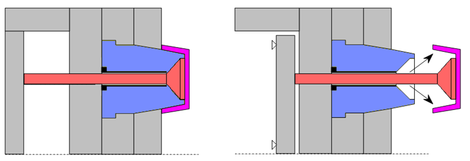
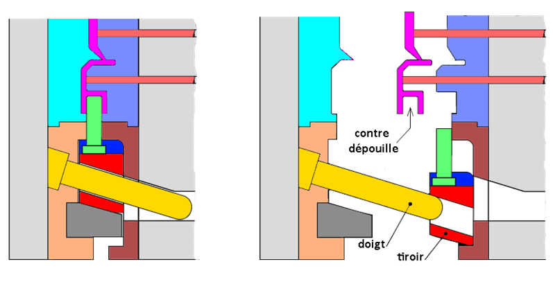
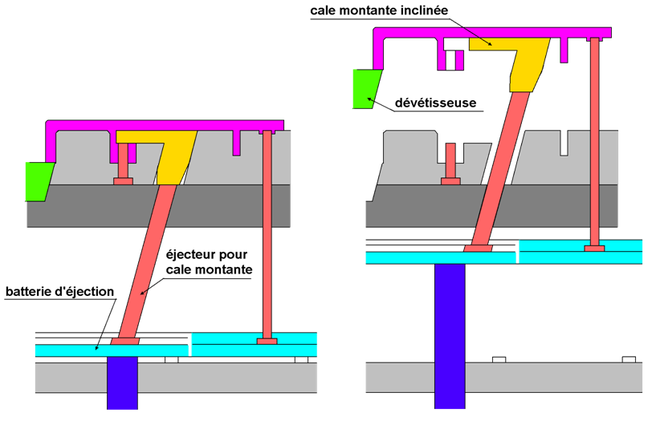
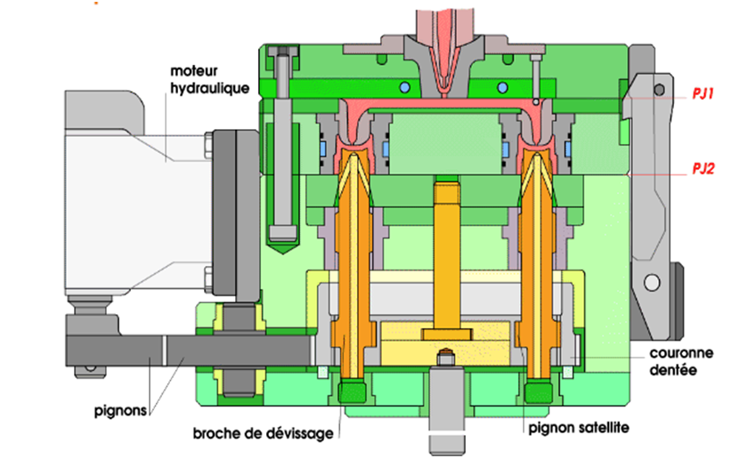

|
|
|
|
| Le
moule - Fonction éjection |
|
|
|
|
|
|
|
|
|
|
Cette fonction
assure l’extraction correcte des pièces et suivant
besoin de leur système
d’alimentation (carotte, canaux alimentation) hors de
l’outillage.
L’étude des plans de joint
et du sens de démoulage détermine la partie de
l’outillage sur laquelle est implanté le
système d’éjection, qui est en
générale, dans la plupart des ca, la partie
mobile.
Ces éléments peuvent être
commandés soit par:
- de l'hydraulique,
- du pneumatique,
- du mécanique.
Il est aussi possible de faire une éjection en plusieurs
phases pour éjecter la carotte avant la pièce ou
inversement.
Cette fonction prend en compte les paramètres suivants :
les caractéristiques du polymère,
- le calcul d’effort
d’éjection,
- les formes et dimensions des zones de retenues.
|
|
|
|
|
|
|
|
Les fonctions
associées aux éjecteurs peuvent être:
- de démouler la pièce
après ouverture du plan de joint,
- de remise à zéro des
plaques d’éjection,
- de démoulage de la carotte par un
arrache carotte,
- de retenir la carotte lors de la
séparation des plaques,
- d’évents ou de soupape,
- d’accroche lors de mouvement
latéraux.
|
|
|
3. |
Solution
constructives d’éjection
|
|
|
| Ejection |
Dessin
associé |
| Ejecteurs
cylindriques |
 |
| Ejecteurs
épaulés |
 |
| Ejecteurs
à têtes coniques |
 |
| Ejecteurs
lames |
|
| Ejecteurs
tubulaires |
 |
| Ejecteurs
en forme |
 |
| Ejection
par plaques dévétisseuses |
 |
| Ejection
par air |
 |
| Ejection
avec contre dépouille |
 |
| Ejection
avec cale montante |
 |
| Ejection
par devissage |
 |
|
|
|
4. |
Caractéristiques
d’un système d’éjection
|
|
|
En fonction de
la forme, le nombre ainsi que des spécifications des cahiers
des charges, on choisi un type d’éjection selon :
- forme
des éjecteurs : On favorise la forme
circulaire autant que possible (facilité
d’usinage). On utilise des éjecteurs à
lame si l’appui se trouve sur un rebord ou à
l’extrémité d’une nervure ou
bien tubulaire si on ait en présence d’une forme
circulaire creuse à démouler.
- Le
nombre des éjecteurs : Le plus grands nombres
possibles afin d’assurer une extraction sans
problème, mais tout en essayant de réduire le
coût d’outillage.
- Le
positionnement des éjecteurs : On essaye de
les placer sur des surfaces non visibles et non fonctionnelles
à proximité des endroits ou l’empreinte
est profonde (nervure, bossage, rebord...), ou encore, à
proximité immédiate des
contre-dépouilles ou des surfaces ayant des
dépouilles faibles, proche des seuils sous-marins.
- La
longueur des éjecteurs : Chaque
éjecteur est ajusté individuellement par rapport
à la surface de l’empreinte
- La
course
d’éjection: Elle sera au minimum
égale
à la profondeur maxi de l’empreinte à
démouler ou de la longueur du noyau.
|
|
|
5. |
La
sécurité d’éjection
|
|
|
Afin
d’éviter
toute détérioration de l’outillage, il
est
impératif qu’à la fermeture du moule le
dispositif
d’éjection soit rentré.
Les systèmes permettant le retour de la batterie
d’éjection sont:
- les ressorts,
- les vérins,
- les éjecteurs de remise à
zéro,
- ….
|
|
|
|
|
|
|
|
|
 |